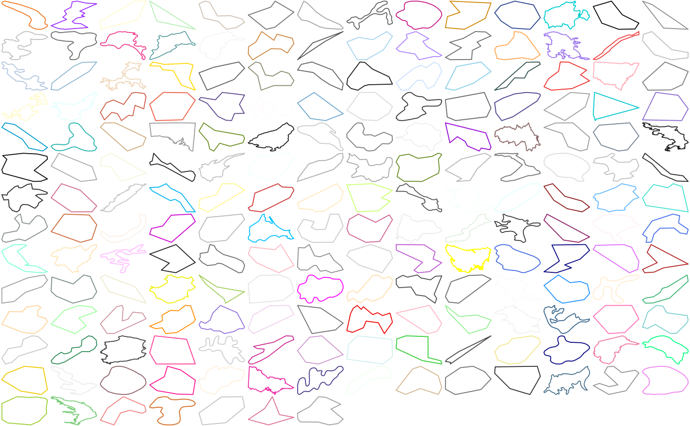

The inland waters are lakes and inland waters presenting as holes within the bounded regions of Australian (and New Caledonian) provinces.
This is an extract from the old Manifold DVD. It is in sf format. The features have variablesIDandProvince` they are (in order):
"103841"Australian Capital Territory
"103842"New Caledonia
"103843"New South Wales
"103846"South Australia
"103847"Tasmania
"103848"Victoria
There's no good reason that New Caledonia is included and not Queensland (for example) it's just what happened doing a quick crop and extract with the mouse. Lord Howe Island and Macquarie Island are both present, as part of New South Wales and Tasmania respectively.
path <- PATH(inlandwaters) plot(path)#> Error in plot.new(): figure margins too largeobj <- split(path$path_link_vertex, path$path_link_vertex$path_) cl <- grDevices::colors()[-1L] cols <- sample(cl, length(obj), replace = length(obj) > length(cl)) par(mfrow = grDevices::n2mfrow(length(obj)), mar = rep(0, 4)) junk <- lapply(seq_along(obj), function(a) { plot(dplyr::inner_join(obj[[a]], path$vertex, "vertex_")[c("x_", "y_")], col = cols[a], type = "l", axes = FALSE) invisible(NULL) })